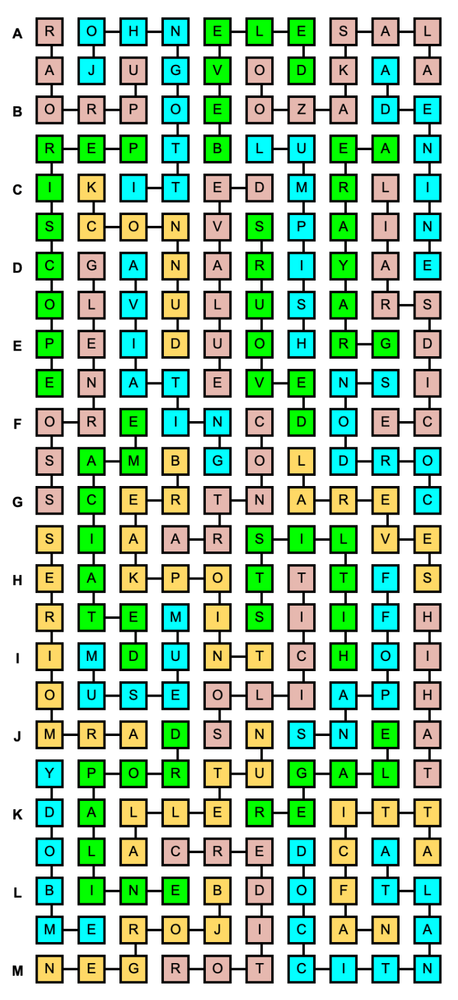

| Clue | Solution |
|---|---|
| Part of G-C-A-T | ADENINE |
| Tourist attraction with a Polar Bear Cam (2 words) | ALASKA ZOO |
| Ornate wardrobes | ARMOIRES |
| Popular food fish (2 words) | ATLANTIC COD |
| Device that vents out hot air, strategically placed because hot air rises (2 words) | ATTIC FAN |
| Flying a plane | AVIATING |
| Having a sloping edge | BEVELED |
| Champion cross-country skier Marit | BJORGEN |
| Exciting moment in a tennis match (2 words) | BREAK POINT |
| Prefix meaning “opposite” | CONTRA |
| Blocks off with a line of soldiers or policemen | CORDONS |
| Someone to whom you owe money | CREDITOR |
| Cheapen | DEVALUE |
| Eats with gusto | DEVOUR |
| Send a casual note (3 words) | DROP A LINE |
| Bird also known as a hedge sparrow | DUNNOCK |
| In serious need of beefing up | EMACIATED |
| Personify | EMBODY |
| End of a David Mamet title (2 words) | GLEN ROSS |
| It’s not always clear what to do when you’re here (2 words) | GRAY AREA |
| Drum kit bit (hyph.) | HI-HAT |
| Rosters of targets (2 words) | HIT LISTS |
| “The Teflon Don” (2 words) | JOHN GOTTI |
| Game generally won by the best bluffer (2 words) | LIAR’S DICE |
| Stupid and slow-moving | LUMPISH |
| Class trip destination, often | MUSEUM |
| Sweet spread from Italy | NUTELLA |
| Short-lived video streaming app from Twitter | PERISCOPE |
| Entertain with stories | REGALE |
| A few | SEVERAL |
| Detach suddenly (2 words) | SNAP OFF |
| Ask someone for something | SOLICIT |
| Hullabaloo | UPROAR |
The Latin names for four weeds can be found in the unnumbered rows, reading left to right row by row but not necessarily consecutively:
Clearing these away leaves a list of ten ingredients:
Combining the first of these with the last, the second with the second to last, and so on, gives you five items:
The first letters of these spell the answer to this puzzle, SPICE.